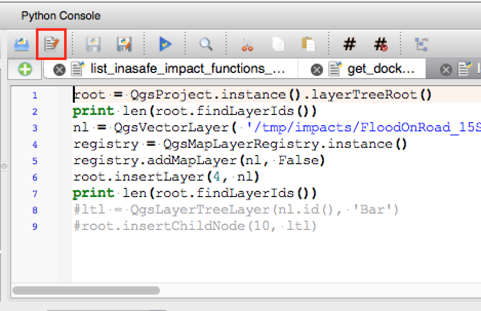

Alterações no QGIS 2.12¶

Este é o registro de alterações para a próxima versão do QGIS - versão 2.12.0 ‘Lyon’ - cidade-sede em que o nosso desenvolvedor encontrava-se em Abril de 2012.
Novos recursos no QGIS 2.12 “Lyon”
Este é o próximo lançamento em nossa série de liberações quadrimestrais. Estamos a apresentar os novos recursos que dão-lhe acesso a novas funcionalidades que estamos trabalhando na “vanguarda” do desenvolvimento do QGIS.
O QGIS “Lyon” está com novas características impressionantes. Destaques especiais são o suporte para a rotulagem baseada em regra, cuja regra pode ser baseada em estilos de tabelas de atributos, e o avançado verificador de geometria, o apoio à digitalização de curva com base em geometrias, melhor gerenciamento de autenticação e muito, muito mais! QGIS 2.12 também tem muitas correções de bugs e falhas de memória. Os recursos fornecidos no QGIS 2,12 serão incluídos na próxima versão LTR (previsto para ser lançado em 2016), portanto, esta versão oferece-lhe uma excelente oportunidade para testar novas funcionalidades que irão tornar o seu caminho para a próxima LTR.
Sempre que novos recursos são adicionados ao software, também introduzem a possibilidade de novos bugs - se você encontrar quaisquer problemas com esta versão, por favor envie um tíquete no QGIS Bug Tracker. Se você estiver trabalhando em um ambiente de produção, onde você deseja ser mais conservador sobre a implementação de novas funcionalidades para seus usuários, nós também fornecemos uma versão Long Term Release (LTR) do QGIS. O atual LTR é a versão 2.8.3 e está disponível em download.qgis.org. Nota de tradução: As versões LTR são versões muito estáveis e recomendadas a serem utilizadas por usuários no seu cotidiano por um longo período.
Agradecimentos
Gostaríamos de agradecer aos desenvolvedores, testadores e documentadores, todas as pessoas lá fora que oferecem seu tempo e esforço.
From the QGIS community we hope you enjoy this release! If you wish to donate time, money or otherwise get involved in making QGIS more awesome, please wander along to qgis.org and lend a hand!
Finalmente, gostaríamos de agradecer aos nossos patrocinadores oficiais pelo apoio financeiro de valor inestimável que prestam a este projeto:
- Patrocinador OURO: Asia Air Survey, Japan
- Patrocinador PRATA: AGH University of Science and Technology, Krakow, Poland
- Patrocinador de PRATA: Estado de Vorarlberg , Áustria
- Patrocinador PRATA: Office of Public Works, Ireland, Ireland
- Patrocinador de PRATA: Sourcepole AG, Suíça
- Patrocinador BRONZE: Lutra Consulting, UK
- Patrocinador BRONZE: WhereGroup GmbH & Co. KG, Alemanha
- Patrocinador BRONZE: Associados Nicholas Pearson , Reino Unido
- Patrocinador BRONZE: QGIS Poland, Poland
- Patrocinador BRONZE: www.terrelogiche.com, Italy
- Patrocinador BRONZE: GeoSynergy, Australia
- Patrocinador BRONZE: Gaia3D, Coréia do Sul
- Patrocinador BRONZE: Royal Borough of Windsor and Maidenhead, Reino Unido
- Patrocinador BRONZE: Chartwell Consultants Ltd, Canadá
- Patrocinador BRONZE: Trage Wegen vzw, Belgium
- Patrocinador BRONZE: GFI - Gesellschaft fr Informations technologie mbH, Alemanha
- Patrocinadores BRONZE: GKG Kassel,(Dr.-Ing. Claas Leiner), Alemanha
- Patrocinador BRONZE: GIS-Support, Poland
- Patrocinador BRONZE: ADLARES GmbH, Alemanha
- Patrocinador BRONZE: www.molitec.it, Italy
- Patrocinador BRONZE: www.argusoft.de, Alemanha
- Patrocinador BRONZE: Customer Analytics, Estados Unidos
- Patrocinador BRONZE: Avioportolano Italia, Itália
- Patrocinador BRONZE: Faculty of Geology, Geophysics and Environmental Protection, AGH, University of Science and Technology, Poland
- Patrocinador BRONZE: Urbsol, Austrália
- Patrocinador BRONZEr: MappingGIS, Spain
- Patrocinador BRONZE: GIS3W, Itália
A current list of donors who have made financial contributions large and small to the project can be seen on our donors list. If you would like to become and official project sponsor, please visit our sponsorship page for details. Sponsoring QGIS helps us to fund our six monthly developer meetings, maintain project infrastructure and fund bug fixing efforts.
QGIS é um software livre e você está sob nenhuma obrigação de pagar nada para usá-lo - na verdade, queremos encorajar as pessoas a usá-lo, independentemente da sua situação financeira ou social - nós acreditamos que capacitar as pessoas com ferramentas de tomada de decisão espaciais resulta em uma sociedade melhor para o futuro de toda a humanidade.
- Geral
- Funcionalidade: Nova tela de boas-vindas
- Funcionalidade: Melhorias contínuas para a qualidade do código
- Funcionalidade: Editor de configurações avançadas
- Funcionalidade: Árvore de grupos de camadas mutuamente exclusivos
- Funcionalidade: Filtragem de valores de campo no Widget de expressão
- Funcionalidade: Suporte para tema de interface de usuários
- Funcionalidade: Novas funções de expressão 2.12
- Funcionalidade: Variáveis em expressões
- Ferramentas de análise
- Aplicação e Opções do Projecto
- Navegador
- Provedores de Dados
- Gestão de dados
- Digitalização
- Rotulagem
- Funcionalidade: Dados definidos a partir do quadrante, quando no modo “em torno do ponto”
- Funcionalidade: Desenha somente etiquetas que se encaixam dentro de polígonos
- Funcionalidade: Controle de obstáculos em rotulagem de feições
- Funcionalidade: Novas opções para controlar como as camadas de polígonos devem agir como obstáculos
- Funcionalidade: Dados definidos para controle da prioridade do rótulo
- Funcionalidade: Opção para camadas únicas de obstáculos
- Funcionalidade: Rotulagem baseado em regras
- Compositor de mapa
- Funcionalidade: melhorias na navegação do Atlas
- Funcionalidade: formato personalizado para anotações de grade
- Funionalidade: manipulação de texto de múltiplas linhas e disposição do texto automático em tabelas de atributos no compositor
- Funcionalidade: Personalização avançada de cor de fundo da célula
- Funcionalidade: Foi adicionada uma opção de ajuste de tamanho de página ao conteúdo e opções para cortar as exportações pelos conteúdos
- Funcionalidade: forçar camadas vetoriais a serem renderizadas como imagens raster
- Funcionalidade: Definição de dados para controle de camadas de mapas e predefinições de estilo
- Funcionalidade: Opção para ocultar páginas da visualização/exportação
- Plugins
- Programabilidade
- Servidor QGIS
- Simbologia
- Funcionalidade: Exportar miniaturas do gerenciador de estilo
- Funcionalidade: Nova opção para limitar o tamanho em mm ao usar tamanhos de unidade do mapa
- Funcionalidade: Melhorias no renderizador de deslocamento
- Funcionalidade: Todas as rampas de cor podem agora ser editadas
- Funcionalidade: Melhoria do tratamento dos contornos de marcadores SVG
- Funcionalidade: Foi adicionado pixels como opção para todas as opções de unidade de tamanho de simbologia
Geral¶
Funcionalidade: Nova tela de boas-vindas¶
Em vez de simplesmente mostrar uma tela em branco, o QGIS irá a partir de agora mostrar-lhe uma lista de seus projetos mais recentes, juntamente com miniaturas, que tornarão o retorno ao trabalho mais rápido e fácil, onde você parou na sua última sessão.
Esse recurso foi desenvolvido por: Matthias Kuhn at OPENGIS.ch

Funcionalidade: Melhorias contínuas para a qualidade do código¶
Através do uso do endereço de higienizador de bibliotecas, centenas de fugas de memória têm sido identificados e corrigidas. Escaneamentos de código automatizado estão sendo usados digitalização está sendo regularmente utilizada para identificar possíveis problemas, e nossa densidade de defeitos Coverity agora é muito reduzida em apenas 0,02 defeitos por 1000 linhas de código. A biblioteca de testes de unidade automatizados também tem crescido significativamente durante a versão 2,12, resultando em mais regressões identificadas e corrigidas imediatamente. Na versão 2.12, nós também adicionamos o teste contínuo em OSX, de modo que cada commit é testado contra a suíte de testes de unidade em ambas as plataformas Linux e OSX.

Funcionalidade: Editor de configurações avançadas¶
Um novo painel foi adicionado à caixa de diálogo de configurações que permite editar qualquer uma das opções já definidas em seu perfil. Este recurso é destinado a usuários avançados no QGIS, se você alterar essas configurações sem compreender totalmente o que você está fazendo, o QGIS pode ter um comportamento inesperado.
Esse recurso foi desenvolvido por: Matthias Kuhn at OpenGIS

Funcionalidade: Árvore de grupos de camadas mutuamente exclusivos¶
Com esse recurso, você pode criar grupos de camadas, onde apenas uma camada no grupo pode se visível a qualquer momento. O recurso pode ser alternado individualmente para grupos menu de contexto visão.
Esse recurso foi desenvolvido por: Martin Dobias at Lutra Consulting on subcontract to Gis3W
Esse recurso foi desenvolvido por: Tuscany Region (Italy) - SITA (CIG: 63526840AE)

Funcionalidade: Filtragem de valores de campo no Widget de expressão¶
Ao criar uma expressão que utiliza valores de um campo, agora você pode filtrar no painel de visualização de valores de campo.
Esse recurso foi desenvolvido por: Salvatore Larosa

Funcionalidade: Suporte para tema de interface de usuários¶
O QGIS 2.12 suporta temas da interface de usuário que você pode usar para personalizar a aparência da janela fundos, botões etc. Por enquanto o QGIS vai com dois temas: ** Padrão ** e Mapeamento de Noite. Este último é um tema escuro que algumas pessoas podem preferir se acreditam que temas leves causam fadiga ocular. Se você conhece um pouco de CSS você pode criar seus próprios temas personalizados com bastante facilidade …
Saiba mais sobre o suporte para temas lendo o artigo no blog de Nathan Woodrow.
Esse recurso foi desenvolvido por: Nathan Woodrow

Funcionalidade: Novas funções de expressão 2.12¶
Um conjunto de funções para “correspondência difusa” foram adicionados. Estes incluem funções para encontrar a semelhança de duas sequências e também para efetuar a correspondência fonética entre sequências, e permitem que você execute filtros para registros que “combine” com uma seqüência de caracteres especificada.
Funções com base em geometria foram adicionadas, incluindo:
num_points(geom)para o cálculo do número de nós em uma geometriaarea(geom),length(geom)eperimeter(geom), para o cálculo da área, comprimento e perímetro de qualquer geometria de objeto.start_point(geom),end_point(geom),point_n(geom, n), para recuperar o primeiro, o último e o número de pontos de uma geometriamake_point(x, y), para criação manual de uma geometria de pontox(geom),y(geom)funções que retornam as coordenadas X e Y para geometrias de pontos ou o baricentro x/y para geometrias não pontuais
Uma nova função project_color foi adicionada, que permite que você recupere uma cor dentre o esquema de cores do projeto por meio do seu nome. Isso permite criar “cores ligadas”, onde a cor dos componentes símbolo ou rótulo podem ser vinculadas a uma cor no esquema de cores do projeto. Atualize a cor no esquema, e todas as cores vinculados serão atualizadas automaticamente para combinar!
Além disso, algumas expressões muito úteis foram portadas de expressões adicionais de plugin, incluindo:
color_part: permite a recuperação de um componente de cor específico (por exemplo, vermelho, matiz, alfa) de uma corset_color_part: permite que um componente de cor específico ser substituído, por exemplo, alterar o valor alfa (opacidade) de uma corday_of_week: retorna o dia da semana como um número a partir de uma data
Além disso, a ajuda de contexto para funções de expressão foi melhorada para melhor legibilidade.

Funcionalidade: Variáveis em expressões¶
Agora você pode definir variáveis personalizadas para uso em expressões. As variáveis podem ser definidas no nível global, nível de projeto, nível de camada e nível de composição. Assim como as regras em cascata CSS, variáveis podem ser substituídas - por exemplo, uma variável de nível de projeto irá substituir quaisquer variáveis de outro nível indicado. Você pode usar essas variáveis para construir cadeias de texto ou outras expressões personalizadas. Por exemplo, no compositor criar uma etiqueta com este conteúdo:
Este mapa foi feito usando QGIS [% @qgis_version %]. O arquivo do projeto para este mapa é: [% @project_path %]
A etiqueta será processada como esta:
Este mapa foi feito usando QGIS 2.12. O arquivo do projeto para este mapa é: /gis/qgis-user-conference-2015.qgs
Você pode gerenciar as variáveis globais a partir das `` Configurações -> menu opções de variáveis``, e variáveis de nível de projeto a partir das propriedades do projeto (incluindo a adição de suas próprias variáveis personalizadas).
Este recurso foi desenvolvido por: Nyall Dawson

Ferramentas de análise¶
Funcionalidade: Foi adicionado a quantidade de vértices de campos derivados da ferramenta de identificação¶
Usando a ferramenta identificação em uma feição de linha, agora irá mostrar o número de vértices presentes na feição como um atributo adicional derivado.
Funcionalidade: Ferramenta de alinhamento de Raster¶
Esta nova ferramenta na biblioteca qgis_analysis é capaz de levar vários rasters como entrada e:
- reprojetar ao mesmo CRS
- reamostrar para o mesmo tamanho de célula e compensar na grade
- cortar para uma região de interesse
- quando necessário, redimensionar os valores
Este recurso foi desenvolvido por: Martin Dobias at Lutra Consulting on subcontract to Kartoza
Este recurso foi financiado pela: DFAT for the InaSAFE project

Funcionalidade: Plugin verificador de geometria e plugin de fisgagem de geometria¶
Dois novos plugins (que você precisa habilitar manualmente no gerenciador de plugins) estão disponíveis para validar e corrigir geometrias. O plugin verificador de geometrias (foto à direita) irá verificar e corrigir o seu conjunto de dados de vetor para uma quantidade de diferentes tipos de erros sistemáticos e tentar resolvê-los. Após a resolução de um erro, a lista de erros é automaticamente atualizada de modo a que se, por exemplo, que corrige um erro também resolve outros erros, todos os erros são removidos da lista de emissão de erros.
Com o plugin Fisgar Geometria, você pode alinhar as bordas e vértices de uma camada vetorial para as bordas e vértices de uma segunda camada usando uma tolerância definida.
Este recurso foi desenvolvido por: Sandro Mani at Sourcepole AG
Este recurso foi financiado por: Canton of Solothurn

Aplicação e Opções do Projecto¶
Funcionalidade: gerenciamento de senha criptografada¶
QGIS 2.12 introduz um novo sistema de autenticação (veja PR 2330, QEP 14). Aqui o que está incluído:
- Configurações de autenticação criptografada por senha são armazenadas em um banco de dados SQLite
- Plugin de arquitetura do método de autenticação (como provedores de dados)
- Plugin de método de autenticação básica
- Plugin básico integrado com PostGIS e conexões de provedores de OWS
- Configuração de usuário/senha em linha é atual (ainda totalmente funcional)
- Configurações de conexão do servidor SSL (salvo exceções ou configurações personalizadas para erros de conexão SSL)
Autenticações PKI relacionados:
- Autoridades de importação adicionais de Certificados, emitentes de certificados intermediários e feixes de identidade pessoal
- Gerencie componentes de certificados como no Firefox
- Plugins de Método de autenticação para pacotes PEM e PKCS#12 em disco e de identidades pessoais armazenados
- Integrado com conexões de provedores de OWS (PostGIS e outros bancos de dados vão demorar um pouco mais de trabalho)
Para cenários de projetos compartilhados, incluindo uma configuração de unidade de rede, você pode editar o ID de configuração de autenticação (authcfg) para algo que é compartilhado entre os usuários.
Desde que o ID authcfg está embutido no arquivo de projeto, cada usuário só precisa fazer uma configuração de autenticação que tem as suas credenciais específicas para esse recurso, em seguida, editar a ID (mediante criação de configuração ou após) para o mesmo ID no arquivo de projeto. Então, quando as cargas de recursos, a mesma configuração será consultado no QGIS de todos os usuários, apenas com as respectivas credenciais para o método de autenticação utilizado.
Para o diálogo Handle Bad Layers, os usuários podem adicionar/editar/remover configurações de autenticação dentro do diálogo e ter a fonte de dados URI atualizada para corresponder. Assim, no cenário de um projeto compartilhado, o usuário pode adicionar imediatamente uma configuração de autenticação nova e apropriada e ver exatamente o que compartilhou no authcfg (O ID deve ser utilizado após o carregamento do projeto).
Atualmente, a senha mestra automaticamente definida pode ser definida através do Python, ou por meio de um plugin customizado em C++ , em configurações de lançamento usando uma chamada para QgsAuthManager::instance()->setMasterPassword( "mypassword", true ), ou pelo ambiente QGIS_AUTH_PASSWORD_FILE para definir o caminho para um arquivo com a senha mestre.
Nota: para o servidor, você também pode usar QGIS_AUTH_DB_DIR_PATH para definir o caminho para um diretório e QGIS_AUTH_PASSWORD_FILE para definir o caminho para um arquivo com a senha mestra no servidor.
Exemplo PKI docs: https://github.com/dakcarto/QGIS-Enhancement-Proposals/blob/auth-system/extras/auth-system/pkiuser.rst
Este recurso foi desenvolvido por: Larry Shaffer
Este recurso foi financiado por: Boundless Spatial, Inc.

Navegador¶
Funcionalidade: Melhorias para conexões de PostGIS no navegador¶
O navegador do QGIS agora suporta a funcionalidade adicional para conexões de PostGIS, incluindo a capacidade de criar, renomear e apagar esquemas, suporte para renomeação e trucamento de camadas e cópia da tabela de um esquema para outro .
Este recurso foi desenvolvido por: Nyall Dawson
Tabela copiada por: Jürgen Fischer at norBIT GmbH

Provedores de Dados¶
Funcionalidade: Melhorias no provedor PostGIS¶
As seguintes melhorias foram feitas para o provedor PostGIS:
- melhorias de desempenho para o processador de regras baseadas em camadas de PostGIS
- suporte adicional para chaves compostas em exibições
Chaves compostas desenvolvidas por: Jürgen Fischer at norBIT GmbH

Gestão de dados¶
Funcionalidade: Melhorias no DBManager¶
Houve uma série de melhorias para a ferramenta DB Manger:
- No DB Manager, agora você pode exportar seus dados para qualquer formato de dados OGR suportado em vez da opção única de Shapefile que estava disponível na versão anterior.
- Oracle Spatial agora é suportado no DBManager
- Ao importar dados em uma tabela, você pode usar os novos recursos importar apenas feições selecionadas, opção para restringir o que será importado.
- Novas janelas de consulta estão criadas como guias para reduzir o número de caixas de diálogo

Funcionalidade: Formatação condicional para células da tabela de atributos¶
Esta é uma grande melhoria para suporte de renderização da tabela de atributos do QGIS. Agora você pode utilizar células de tabela de estilo de acordo com regras. Por exemplo, você pode colorir todas as células com uma população menor que 50 000 em vermelho. A opção é ativada através de um novo ícone na barra de ferramentas da tabela no canto superior direito da janela tabela de atributos. Você pode ler mais sobre este recurso no artigo no blog de `Nathan.
Esse recurso foi desenvolvido por: Nathan Woodrow

Funcionalidade: Suporte para caminhos relativos nos Widgets¶
Para os seguintes tipos de widget de edição:
- Nome do arquivo
- Foto
- Exibição da Web
Se o caminho selecionado com o navegador de arquivos está localizado no mesmo diretório que o arquivo de projeto .qgs ou abaixo dele, os caminhos são convertidos para caminhos relativos. Isso aumenta a portabilidade de um projeto do QGIS com informação multimídia em anexo.
Esse recurso foi desenvolvido por: Matthias Kuhn at OpenGIS
Este recurso foi financiado por: Alta ehf

Digitalização¶
Funcinalidade: Melhorias de digitalização¶
No QGIS 2.10, mencionamos que existe uma nova arquitetura de geometria, mas que nem todos os recursos foram apoiados nas ferramentas de digitalização. Com o QGIS 2.12 agora temos de editar o apoio à criação de curvas / ‘circular strings`. Note novamente que você precisa estar usando um provedor de dados (por exemplo, PostGIS, GML ou WFS) que suporta curvas. Estes melhoramentos das ferramentas de digitalização também foram adicionados no QGIS 2.12:
- ferramenta para adicionar cadeias circulares com dois pontos e raio
- ferramenta para adicionar cadeias circulares com ponto de partida, ponto de curva e ponto final
- permitir o escape para cancelar desenho novas feições
- exibir uma tabela ao editar com a ferramenta de nó, permitindo que você insira manualmente as coordenadas x e y exatas para nós, assim como os valores de z e m (dependendo do tipo de camada)
Além disso, as ferramentas de edição de geometria e de modificação foram atualizadas para funcionar corretamente com camadas contendo dimensões z ou m.
**Este recurso foi desenvolvido por: **Marco Hugentobler da Sourcepole AG
Este recurso foi financiado por: Canton of Solothurn

Rotulagem¶
Funcionalidade: Dados definidos a partir do quadrante, quando no modo “em torno do ponto”¶
Agora é possível especificar um quadrante de dados definidos quando um rótulo de ponto está definido para o modo de posicionamento ao redor do ponto. Isso permite que você substitua manualmente a colocação do quadrante para um rótulo específico, permitindo que os rótulos restantes estejam volta para a colocação automática.
Veja este artigo para mais detalhes.
Este recurso foi desenvolvido por: Nyall Dawson

Funcionalidade: Desenha somente etiquetas que se encaixam dentro de polígonos¶
Uma opção foi adicionada para camadas de polígonos que desenha apenas rótulos que se encaixam completamente dentro dos limites do polígono.
Este recurso foi desenvolvido por: Nyall Dawson

Funcionalidade: Controle de obstáculos em rotulagem de feições¶
Na versão 2,12 agora é possível especificar a prioridade para os obstáculos em rotulagem de recursos. Isso permite que você defina se as etiquetas devem sobrepor feições de certas camadas, em vez de outras. A prioridade pode ser também dada definido certas feições que são mais susceptíveis de serem cobertas do que outros. Você também pode usar dados definidos por expressões ou campos para controlar se uma feição específica na camada irá funcionar como um obstáculo para etiquetas.
Este recurso foi desenvolvido por: Nyall Dawson

Funcionalidade: Novas opções para controlar como as camadas de polígonos devem agir como obstáculos¶
Novas opções foram adicionadas para controlar como etiquetas devem ser colocadas para evitar a sobreposição das funções das próprias camadas de polígonos. As opções são: evitar a colocação de etiquetas sobre o interior do polígono ou evitar colocá-las sobre os limites do polígono. Evitando rótulos colocados sobre as limites é útil para camadas limites regionais, onde as feições cobrem uma área inteira. Neste caso, é impossível evitar colocar rótulos dentro destas feições e parece muito melhor evitar colocá-los ao longo dos limites entre feições. O resultado é um melhor posicionamento cartográfico de etiquetas nesta situação.
Veja este artigo para mais detalhes.
Este recurso foi desenvolvido por: Nyall Dawson
Funcionalidade: Dados definidos para controle da prioridade do rótulo¶
Este recurso, frequentemente-pedido, permite aos usuários definir a prioridade para etiquetas individuais. Nas versões anteriores, o QGIS permitiu define a prioridade da etiqueta para uma camada inteira, mas não havia nenhuma opção para controlar a prioridade de recursos dentro de uma camada. Agora, você pode usar uma expressão de dados ou campo de prioridade de rotulagem de certas feições em detrimento de outras dentro de uma camada!
Veja este artigo para mais detalhes
Este recurso foi desenvolvido por: Nyall Dawson

Funcionalidade: Opção para camadas únicas de obstáculos¶
Isso permite aos usuários definir uma camada como um obstáculo para os rótulos de outra camada, sem render quaisquer rótulos próprios. Isso significa que uma camada rotulada não pode atuar como um obstáculo para os rótulos em outras camadas, então eles vão ser omitidos do desenho dos rótulos sobre as feições na camada de obstáculos, e permite a melhoria da colocação automática do rótulo, impedindo sobreposição de etiquetas e de feições a partir de outras camadas.
Na imagem você pode ver que as ruas têm a opção “Omitir outros rótulos de para feições nesta camada” habilitada. As etiquetas vermelhas derivadas de geometrias poligonais são colocados para evitar a intersecção com o eixo da rua. É necessário ativar a opção “horizontal” ou “livre” sobre a camada de polígono, a fim de obter resultados adequados.
Note que também é possível tanto para rotular uma camada, mas também atuam como camada obstáculo, permitindo que a caixa de seleção “Omitir rótulos de para as feições” na guia “renderização” das configurações de rotulagem.
Veja este artigo para mais detalhes.
Este recurso foi desenvolvido por: Nyall Dawson

Funcionalidade: Rotulagem baseado em regras¶
Etiquetas em feições podem ser decoradas usando as regras para adicionar ainda mais controle sobre o posicionamento e estilização de etiquetas. Assim como a regra baseada pela prestação cartográfica, regras de etiqueta podem ser aninhadas para permitir opções de estilo extremamente flexíveis. Por exemplo, você pode tornar os rótulos de forma diferente com base no tamanho da feição que terá prioridade (como ilustrado na imagem).
Veja o post no blog para mais detalhes
Esse recurso foi desenvolvido por: Martin Dobias at Lutra Consulting on subcontract to Gis3W
Esse recurso foi desenvolvido por: Tuscany Region (Italy) - SITA (CIG: 63526840AE)

Compositor de mapa¶
Funcionalidade: melhorias na navegação do Atlas¶
Agora você pode definir um campo ou expressão como o “nome da página” para as composições do atlas. A combobox do número da página foi adicionada à barra de ferramentas atlas, que mostra tanto uma lista de números de páginas disponíveis como seus nomes. Isto permite-lhe saltar diretamente para uma página específica dentro do seu atlas.
O nome da página também pode ser usado dentro de expressões de simbologia e rotulagem para permitir estilização avançada de feições do atlas com base no seu nome da página.
Este recurso foi desenvolvido por: Nyall Dawson

Funcionalidade: formato personalizado para anotações de grade¶
A grade no compositor de mapas agora pode ser formatada em formatos personalizados, que são avaliados usando o mecanismo de expressão. Agora você utiliza qualquer formato de numeração esotérica que seus mapas exigem!
Este recurso foi desenvolvido por: Nyall Dawson

Funionalidade: manipulação de texto de múltiplas linhas e disposição do texto automático em tabelas de atributos no compositor¶
Tabelas de atributos no compositor agora incluem suporte completo para sequências multilinha. O controle sobre o alinhamento vertical do texto dentro de uma célula também foi adicionado, junto com opções para moldar texto em determinados caracteres ou calculas automaticamente a quebra de texto, possibilitando ajustar o tamanho das colunas. Para impor a quebra de texto automática com alturas de linha automáticas, defina a largura da coluna para um tamanho fixo.
Este recurso foi desenvolvido por: Nyall Dawson
Este recurso foi financiado por: City of Uster

Funcionalidade: Personalização avançada de cor de fundo da célula¶
Esta mudança permite aos usuários definir cores diferentes para linhas e colunas, a primeira ou última linha ou coluna e linha de cabeçalho, alternando dentro das tabelas de atributos no compositor.
Este recurso foi desenvolvido por: Nyall Dawson
Este recurso foi financiado por: Ville de Morges

Funcionalidade: Foi adicionada uma opção de ajuste de tamanho de página ao conteúdo e opções para cortar as exportações pelos conteúdos¶
Uma nova opção foi adicionada no painel de composição para redimensionar uma composição para o seu conteúdo, com margens extras opcionais, se necessário.
Exportações do compositor também podem ser cortadas pelo seu conteúdo. Se selecionado, esta opção fará com que a saída de imagens pelo compositor inclua apenas a área da composição com o conteúdo. Há também uma opção para adicionar margens em torno dos limites de item, se necessário.
Se a composição inclui uma única página, então a saída será dimensionada para incluir tudo sobre a composição. Se é uma composição de várias páginas, cada página será cortada para incluir apenas a área da página com itens.
Foi adicionado um diálogo de opções de exportação para nova imagem, de forma a facilitar este processo, que também inclui atalhos úteis para substituir a resolução de impressão ou dimensões da imagem exportada.
Patrocinado por: NIWA
Este recurso foi desenvolvido por: Nyall Dawson

Funcionalidade: forçar camadas vetoriais a serem renderizadas como imagens raster¶
Uma nova opção foi adicionada sob as propriedades da camada, forçando uma camada vetorial ser renderizada como raster. Camadas extremamente detalhadas (por exemplo, camadas de polígonos com um grande número de nós) podem causar exportações do compositor em formato PDF/SVG enormes visto que todos os nós estão incluídos no arquivo exportado. Isso também pode tornar o arquivo resultante muito lento para trabalhar com programas externos. Agora, você pode forçar essas camadas a serem rasterisadas em uma base camada por camada, de modo que os arquivos exportados não terão que incluir todos os nós contidos nestas camadas. O resultado final é tamanhos de arquivo menores e PDFs/SVGs que são mais rápidos de abrir.
Este recurso foi desenvolvido por: Nyall Dawson

Funcionalidade: Definição de dados para controle de camadas de mapas e predefinições de estilo¶
Novos dados de controle foram adicionados para as camadas de mapas e predefinições de estilo para mostrar em um compositor de mapa. Os dados das camadas do mapa são definidos através de expressão que deve resultar em uma | (pipe) lista de nomes de camadas que serão mostrados no mapa delimitado, ou os dados predefinidos de estilo são definidos em expressão e devem resultar no nome de uma de estilo existente.
Usando esse controle sobre camadas de mapas é permitido ao atlas “com base em camadas”, onde as camadas do mapa devem mudar entre as páginas em vez de ou em combinação com o mapa mudando no atlas. Um exemplo poderia ser um atlas de repetição sobre diferentes unidades administrativas e, ao mesmo tempo em repetição através de vários mapas históricos ou imagens aéreas.
Este recurso foi desenvolvido por: Nyall Dawson
Este recurso foi financiado por: City of Uster

Funcionalidade: Opção para ocultar páginas da visualização/exportação¶
Há agora uma opção para ocultar a exibição de páginas durante a edição e exportação de composições. Essa opção é útil para as composições que não são destinadas à impressão e não estão vinculadas a quaisquer tamanho de página predefinido. Você pode ocultar as páginas, em seguida, adicionar e redimensionar itens de qualquer maneira que você desejar, sem a distração visual dos limites da página!
Patrocinado por: NIWA
Este recurso foi desenvolvido por: Nyall Dawson
Plugins¶
Funcionalidade: Atualização do plugin GRASS¶
O plugin GRASS foi atualizado para habilitar o suporte para o GRASS 7. camadas GRASS podem ser pesquisados e carregadas a partir do navegador ou do painel QGIS browser. Vetores de dados Grass podem ser editados diretamente no QGIS. O projeto contém os seguintes pacotes de trabalho:
- Atualização da biblioteca do Plugin e versão multi compilação
- O navegador QGIS está integrado no painel
- Suporte para MapSets, módulos e shell para permitir a análise de dados
- Edição vetorial
Para usuários de ambos os GRASS 6 e 7, você vai achar que a integração entre o GRASS e o QGIS é muito mais transparente. Você pode criar camadas no GRASS diretamente no painel do navegador QGIS, estilizar camadas vetoriais no GRASS usando ferramentas do QGIS e usar as ferramentas do QGIS para digitalização e criação de novas geometrias vetoriais em um mapset GRASS.
Veja também ` a página do projeto do plugin QGIS GRASS <http://www.gissula.eu/qgis-grass-plugin-crowdfunding/>`__ and progress report
Este recurso foi desenvolvido por: Radim Blazek
Este recurso foi financiado por: Crowd funding, see project page

Programabilidade¶
Funcionalidade: MapTools movido para app-> gui¶
Esta mudança permite a reutilização de ferramentas de mapas de dentro de scripts PyQGIS e plugins em Python.
Esse recurso foi desenvolvido por: Matthias Kuhn at OpenGIS
Este recurso foi financiado por: SIGE
Funcionalidade: Edição de camadas via `with edit(layer):`¶
Exemplo:
from qgis.core import edit
with edit(layer):
f=layer.getFeatures().next()
f[0]=5
layer.updateFeature(f)
Isto irá automaticamente chamar commitChanges() no final. Se ocorrer qualquer exceção, ele vai rollback() todas as mudanças.
Esse recurso foi desenvolvido por: Matthias Kuhn at OpenGIS
Funcionalidade: Nova API para o motor de rotulagem (QgsLabelingEngineV2)¶
A ideia é tornar o motor mais flexível em comparação com a implementação QgsPalLabeling:
- Relacionar abstrações com rótulos de texto / diagramas do próprio motor
- permitir vários tipos de rótulos por camada
- Suportar rótulos customizados por fornecedores (ex: implementado por plugins)
- fazer o motor de rotulagem independente do mapa motor de renderização
- torna mais fácil de auto-testar o motor de rotulagem e de seus componentes
Veja o post no blog para mais detalhes
Esse recurso foi desenvolvido por: Martin Dobias at Lutra Consulting on subcontract to Gis3W
Esse recurso foi desenvolvido por: Tuscany Region (Italy) - SITA (CIG: 63526840AE)
Funcionalidade: roteiros abertos no editor externo¶
Pythonistas se alegre - agora você pode abrir seus scripts em um editor externo usando o novo botão adicionado ao console.
Esse recurso foi desenvolvido por: Nathan Woodrow

Funcionalidade: Novas classes para programas PyQGIS¶
Uma nova classe QgsStringUtils foi adicionada e permite que os scripts PyQGIS utilizem os novos algoritmos de correspondência difusa adicionados na versão 2,12. Estes incluem funções para encontrar a distância de edição Levenshtein entre duas strings e para o cálculo da representação fonética soundex de uma string. Esses algoritmos têm sido altamente otimizados para desempenho, eles estão prontos para você começar a utilizar a correspondência difusa através de milhões de sequências!
Este recurso foi desenvolvido por: Nyall Dawson
Servidor QGIS¶
Funcionalidade: QGIS Server API Python¶
QGIS Server é agora embalado como uma biblioteca com uma API inicial (mas crescente) e ligações Python. Com a nova API, temos um conjunto de testes Python para o principal componente do servidor e para os plugins do servidor. Invocar o servidor a partir do Python é agora tão fácil como:
from qgis.server import QgsServer
headers, body = QgsServer().handleRequest(my_query_string)
Para mais informações veja este artigo
Este trabalho tem sido desenvolvido e financiado por: Alessandro Pasotti em ItOpen
Funcionalidade: getMap em formato DXF¶
Agora é possível recuperar o resultado de um pedido GetMap WMS em formato DXF. Ele suporta os mesmos recursos e opções disponíveis no QGIS desktop. Com as mesmas limitações.
http://yourserver.org/cgi-bin/qgismapserver.fcgi?map=/path/to/your/projectfile.qgs&SERVICE=WMS&VERSION=1.3.0&REQUEST=GetMAP&FORMAT=application/dxf&FORMAT_OPTIONS=SCALE:500;MODE:SYMBOLLAYERSYMBOLOGY&FILE_NAME=youroutputfilename.dxf&CRS=EPSG:EPSG:21781&BBOX=695558.73070825,244430.77224034,697158.88528251,245722.25976142&WIDTH=1042&HEIGHT=841&LAYERS=yourdxfexportlayersVeja também QGIS com servidor de dados OGC <http://docs.qgis.org/2.18/en/docs/user_manual/working_with_ogc/ogc_server_support.html#dxf-export>`__ por todas as opções avaliadas.
Na imagem você vê o Cliente QGIS Web na esquerda com a funcionalidade de exportação DXF (utilizando o servidor QGIS) e na mesma medida visto no Autodesk TrueView do lado direito.
Este recurso foi desenvolvido por: Marco Hugentobler Sourcepole AG
Este recurso foi financiado por: City of Uster

Simbologia¶
Funcionalidade: Exportar miniaturas do gerenciador de estilo¶
O gerente de estilo agora permite exportar miniaturas do estilo selecionado como SVG ou imagens PNG.
Esse recurso foi desenvolvido por: Nathan Woodrow

Funcionalidade: Nova opção para limitar o tamanho em mm ao usar tamanhos de unidade do mapa¶
Anteriormente, apenas a opção de limitar o tamanhos de alcance da escala do mapa de unidade estava disponível. Agora você também optar por limitar o tamanho processado correspondente em mm.

Funcionalidade: Melhorias no renderizador de deslocamento¶
- Permitem tolerância em mm/pixels para o renderizador de deslocamento
- Permitir a definição de transparência para cores
- O modo de colocação de anéis concêntricos (permite a exibição mais compactada do que apenas com anéis)
Este recurso foi desenvolvido por: Nyall Dawson

Funcionalidade: Todas as rampas de cor podem agora ser editadas¶
No QGIS 2.12 os botões “Editar” foram adicionados ao lado das opções de escolha de cada rampa de cores. Isso permite que você facilmente edite uma rampa de cor existente sem ter que criar uma nova rampa e substituir a existente.

Funcionalidade: Melhoria do tratamento dos contornos de marcadores SVG¶
O QGIS 2.12 corrige uma série de questões relativas à manipulação de contornos e preenchimentos dentro de marcadores de símbolos SVG .
As versões anteriores do QGIS tornaria os contornos em um tamanho significativamente menor do que o conjunto, e SVGs com tamanhos de contorno em unidades do mapa seriam deformados.
Esses problemas foram corrigidos na QGIS 2,12, mas como resultado, você pode precisar atualizar sua simbologia do projeto se você definiu anteriormente contornos de grandes dimensões para seus símbolos para superar esses bugs. Na imagem você vê marcadores SVG nos diálogos símbolo da camada QGIS 2,12 vs QGIS 2,10 .

Funcionalidade: Foi adicionado pixels como opção para todas as opções de unidade de tamanho de simbologia¶
Para todas as entradas de tamanho nos Widgets agora há uma terceira opção “pixel”, a “mm” e “unidades do mapa” serão os próximos. Trata-se de tamanhos de símbolos, larguras de traçado, tamanhos do traço, deslocamentos, etc. Isso pode ajudar, se você projetar para telas e não para a saída de impressão.
Este recurso foi desenvolvido por: Nyall Dawson